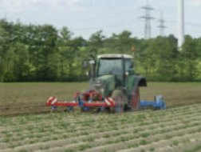

Kapitel 01
Der Boden
Alles beginnt mit einer sechsgliedrigen Fruchtfolge. Ihr Herzstück ist die Gründüngung mit Rotklee: Er bindet Stickstoff im Boden und ersetzt so die Düngung, die ein Bioland-Betrieb nicht kaufen darf.
Bioland-Hof in Witten · seit 1987
Getreide, Kartoffeln, Speiseöle, Senf und Nudeln von eigenen Flächen in Witten, Dortmund und Essen. Angebaut nach Bioland-Richtlinien, verarbeitet auf dem Hof, verkauft freitags am Gederfeldweg.
Der Hof
Die Kornkammer Haus Holte liegt am Gederfeldweg in Witten. Dirk Liedmann und sein Partner Bernhard Pawliczek bewirtschaften die Felder seit 1987 nach den Richtlinien des Bioland-Verbandes. Das heißt: keine chemisch-synthetische Düngung, keine Pflanzenschutzmittel, Unkraut wird mechanisch reguliert, und die Fruchtfolge hält den Boden gesund.
Als Bioland-Betrieb erfüllt der Hof einen Standard, der deutlich über den gesetzlichen Vorgaben der EU-Bio-Verordnung liegt.
Mehr über den Hof


Die Menschen
Hinter dem Team Kornkammer stehen Dirk Liedmann und Bernhard Pawliczek, die den Hof seit 1987 führen, sowie Stefan Pawliczek, Sebastian Krol und Max.

Betriebsleiter · seit 1987
Dirk Liedmann bewirtschaftet die Felder der Kornkammer seit 1987 nach Bioland-Richtlinien und ist persönlich haftender Gesellschafter der Kornkammer Haus Holte oHG. Wer den Hof besucht, bekommt von ihm die Bewirtschaftungsprinzipien erklärt: die sechsgliedrige Fruchtfolge, die Gründüngung mit Rotklee, und warum beim Getreide weniger die Trockenheit als die große Hitze das Problem ist.

Gründer · seit 1987
Bernhard Pawliczek ist Partner von Dirk Liedmann seit dem ersten Jahr und Gründer der Kornkammer Haus Holte. Nach ihm ist der scharfe Senf benannt, „Der scharfe Bernie“. Bei Hofbesuchen fährt er die Kinder mit dem Oldtimer-Traktor über den Hof.
Das ganze TeamUnsere Arbeit
Der Hof gibt immer weniger Rohware ab und verarbeitet immer mehr selbst: Mehle für Bäckereien, Öle aus der eigenen Presse, Senf aus der eigenen Mühle.



Kapitel 01
Alles beginnt mit einer sechsgliedrigen Fruchtfolge. Ihr Herzstück ist die Gründüngung mit Rotklee: Er bindet Stickstoff im Boden und ersetzt so die Düngung, die ein Bioland-Betrieb nicht kaufen darf.
Kapitel 02
Im Anbau 2025/2026 stehen Senf, Hafer, Rotklee, Winterweizen, Dinkel, Kartoffeln und Blaumohn auf den Flächen. Jede Kultur hat auf dem Hof einen Abnehmer: die Mühle, die Ölpresse, die Senfmühle oder das Regal.
Kapitel 03
Der erste Kleeaufwuchs geht als Säuberungsschnitt an eine Bio-Biogasanlage; die Nährstoffe kommen als Gärsubstrat auf den Hof zurück. Der zweite Aufwuchs ist so sauber, dass er als Saatgut gedroschen wird. Beim Getreide macht weniger die Trockenheit Sorgen als die große Hitze.
Kapitel 04
Getreide wird in Bäckerqualität vermahlen. Öle werden kalt gepresst, Leinöl bei unter 40 °C und ungefiltert. Senf entsteht traditionell auf Granitsteinen. Alles aus hundert Prozent hofeigener Saat.
Kapitel 05
Etwa 98 Prozent des Brotweizens gehen an Bäckereien. Der Rest steht freitags im Hofverkauf, im Onlineshop, im Naturkosthandel unter der Marke Ruhrtalgold und bei regionalen Partnern wie EDEKA Zierles in Oer-Erkenschwick.
Die ganze Arbeit im DetailBiologische Vielfalt
Sieben Kulturen, und was aus ihnen wird.
01 Senf

Wird in der Senfmanufaktur auf Granitsteinen zu drei Sorten vermahlen und in der Ölmanufaktur zu Senföl gepresst.
Zum Senf02 Hafer

Wird zu Haferkernen und zartblättrigen Haferflocken, in 500 Gramm bis 25 Kilogramm.
Zu Körnern und Flocken03 Rotklee

Das Herzstück der Fruchtfolge: Gründüngung, die Stickstoff bindet. Der erste Schnitt geht an eine Bio-Biogasanlage, der zweite wird Saatgut.
So funktioniert die Fruchtfolge04 Winterweizen

Wird zu Mehl Type 550 und Vollkornmehl in Bäckerqualität. Rund 98 Prozent des Brotweizens gehen an Bäckereien.
Zu den Mehlen05 Dinkel

Wird zu Mehl Type 630, Vollkornmehl, ganzen Körnern und zu hellen und dunklen Dinkelnudeln.
Zu den Nudeln06 Kartoffeln

Wachsen 2025/2026 in Dortmund-Barop und Dortmund-Mengede. Erhältlich als Holter Knolle und Ruhrtalgold, festkochend bis mehlig.
Zu den Kartoffeln07 Blaumohn

Die Sorte Wintermohn wird nativ kaltgepresst. So bleibt der typische Mohngeschmack im Öl.
Zum MohnölSortiment
Eine Auswahl. Das ganze Sortiment mit allen Gebinden steht im Shop; abholen können Sie freitags am Hof.
Alle Produkte


100 % Transparenz
Wir sagen, wo es gewachsen ist. Die Kartoffeln der Saison 2025/2026 kommen von zwei Flächen in Dortmund. Das Getreide der letzten dokumentierten Saison stammt von Flächen in Essen, Witten und Dortmund.

Klimaprojekt
Die Kornkammer ist einer der Betriebe im Netzwerk Pilotbetriebe. Dort wird untersucht, welche Treibhausgase, also CO₂, Methan und Lachgas, in Pflanzenbau und Milchviehhaltung entstehen, und zwar als Gesamtbetrachtung aus Böden, Futterbau, Tierhaltung und Düngung. Aus den Ergebnissen sollen neue Beratungsinstrumente zum Klimaschutz entstehen.
Mehr zum Projekt
Wo Sie uns noch finden

Kommen Sie vorbei
Hofverkauf jeden Freitag von 8 bis 17 Uhr. Fällt ein Feiertag auf den Freitag, sind wir am Donnerstag da. Wer vorher anrufen möchte: 02302 282 7475.